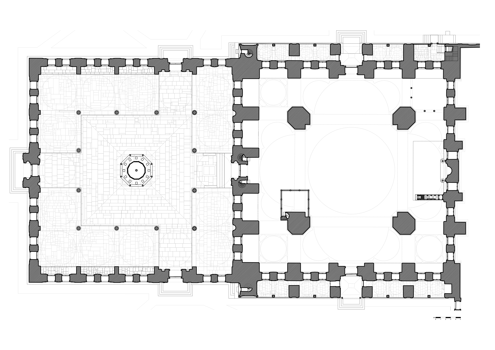
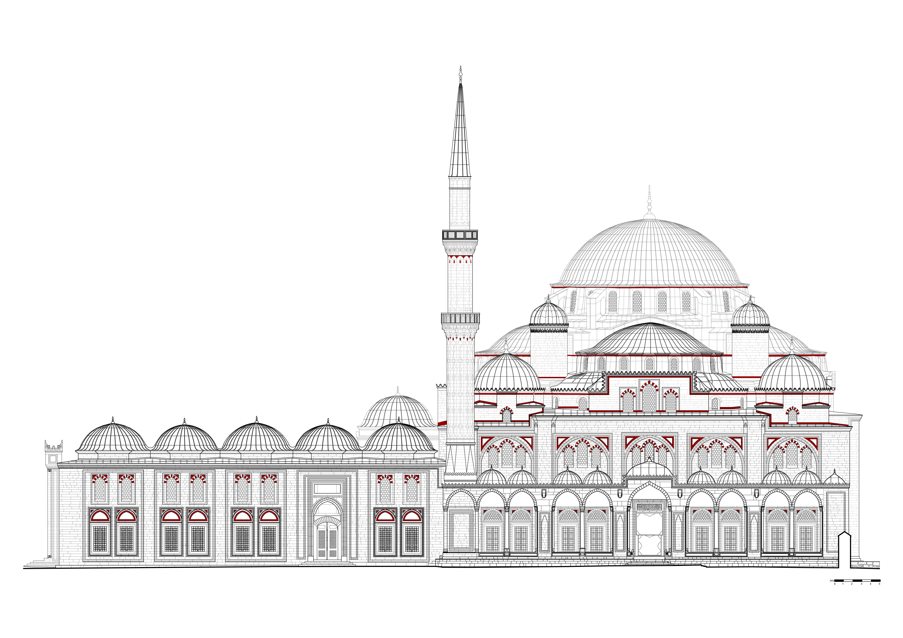
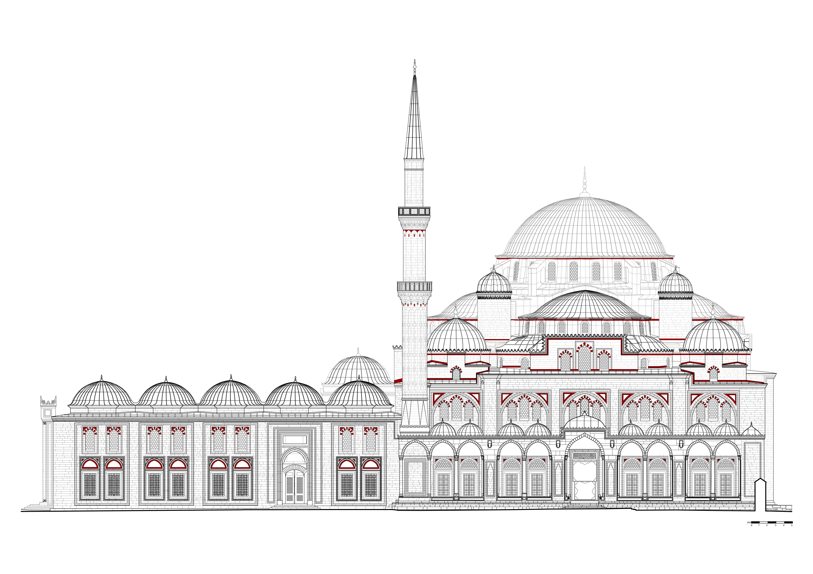

Sehzade Mehmet Camii
Şehzade Camii (Şehzade Mehmet Camii ya da Şehzadebaşı Camii olarak da bilinir), İstanbul'un Fatih ilçesinde yer alan ve Mimar Sinan tarafından yapılan cami. I. Süleyman tarafından Saruhan Sancak Beyi iken 1543'te 22 yaşında ölen oğlu Mehmed adına yaptırılmıştır. Camiyi 1543-1548 yılları arasında Mimar Sinan'a yaptırttı. Mimar Sinan'ın çıraklık eserimdir dediği camidir.
18,42 metrelik kubbesi 4 büyük yarım kubbeye yaslanır. Şadırvan avlusu 12 sütunda 16 kubbelidir. İkişer şerefeli çift minaresi vardır. İmaret ve medrese, tabhane, türbeler cami bahçesinde ve arka sokaktadır.
Şehzade türbesinin içi rengarenk çinilerle doludur. Ortadaki sandukada Şehzade Mehmed, sağında Şehzade Cihangir yatar, solunda Hümaşah Sultan. Şehzade türbesinin sol tarafında Rüstem Paşa'nın türbesi bulunur. Diğer şehzade türbeleri Vefa tarafındadır. Dış avluda Destari Mustafa Paşa'nın türbesi vardır


Edirne Selimiye Camii
Selimiye Cami, Edirne'de bulunan, Osmanlı padişahı II. Selim'in Mimar Sinan'a yaptırdığı camidir. Sinan'ın 90 (bazı kitaplarda 80 olarak geçer) yaşında yaptığı ve "ustalık eserim" dediği Selimiye Camii gerek Mimar Sinan'ın gerek Osmanlı mimarisinin en önemli yapıtlarından biridir.
Caminin kapısındaki kitabeye göre yapımına 1568 (Hicri: 976) yılında başlanmıştır. Caminin 27 Kasım 1574 Cuma günü açılması planlanmışsa da ancak II. Selim'in ölümünün ardından 14 Mart 1575'te ibadete açılmıştır.
Mülkiyeti Sultan Selim Vakfı’ndadır. Bugün şehrin merkezinde bulunan caminin yapıldığı alanda inşasına Süleyman Çelebi döneminde başlanan, sonradan Yıldırım Bayezid'in geliştirdiği Edirne'nin ilk sarayı (Saray-ı elik) ve Baltacı Muhafızları haremi bulunmaktaydı. Bu alandan “Sarıbayır” veya “Kavak Meydanı” diye bahsedilir.
2000'de UNESCO tarafından Dünya Mirası Geçici Listesi'ne dahil edilen Selimiye Camii ve Külliyesi, 2011'de ise Dünya Mirası olarak tescil edildi.
 
